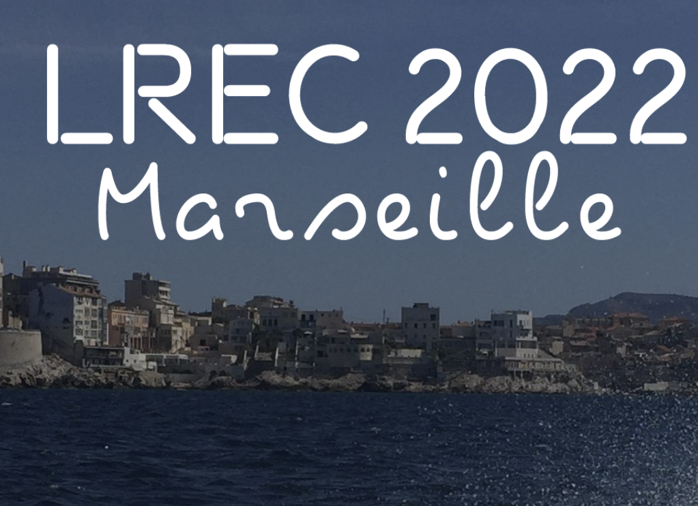

SIGANN
ACL Special Interest Group for Annotation
The Sixteenth Linguistics Annotation Workshop (LAW XVI) will take place in Marseille, France in June, co-located with LREC 2022. The special theme for the workshop is New Frontiers and Paradigms in Linguistic Annotation. Stay tuned for the call for papers!
SIGANN Officers
| PRESIDENT |
Amir Zeldes Department of Linguistics Georgetown University amir.zeldes [at] georgetown.edu |
| SECRETARY | Ines Rehbein
School of Business Informatics and Mathematics Universität Mannheim ines [at] informatik.uni-mannheim.de |
| COMMITTEE |
Stefanie Dipper, Ruhr-Universität Bochum Annemarie Friedrich, Saarland University Chu-Ren Huang, Hong Kong Polytechnic University Lori Levin, Carnegie-Mellon University Adam Meyers, New York University Antonio Pareja-Lora, SIC, UCM / OEG, UPM Massimo Poesio, University of Trento Sameer Pradhan, Harvard University Ines Rehbein, Saarland University Nancy Ide, Vassar College Nathan Schneider, Georgetown University Manfred Stede, Universitat Potsdam Katrin Tomanek, Open Table Fei Xia, University of Washington Nianwen Xue, University of Colorado Heike Zinsmeister, University of Hamburg |